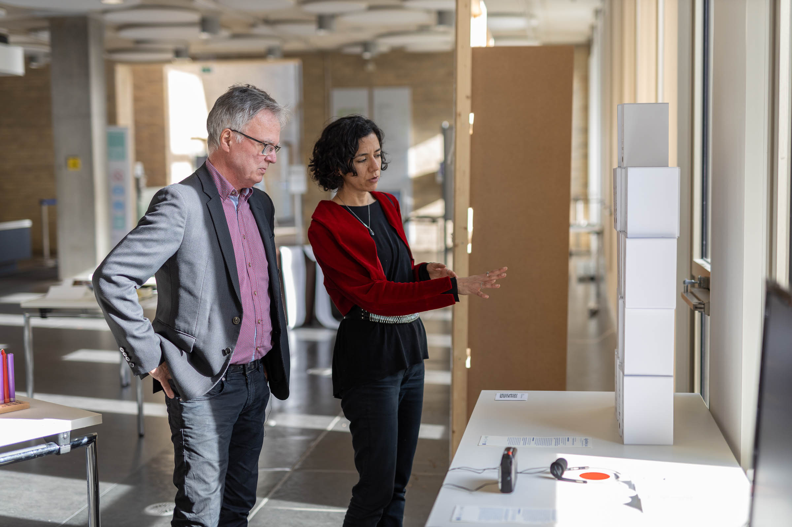
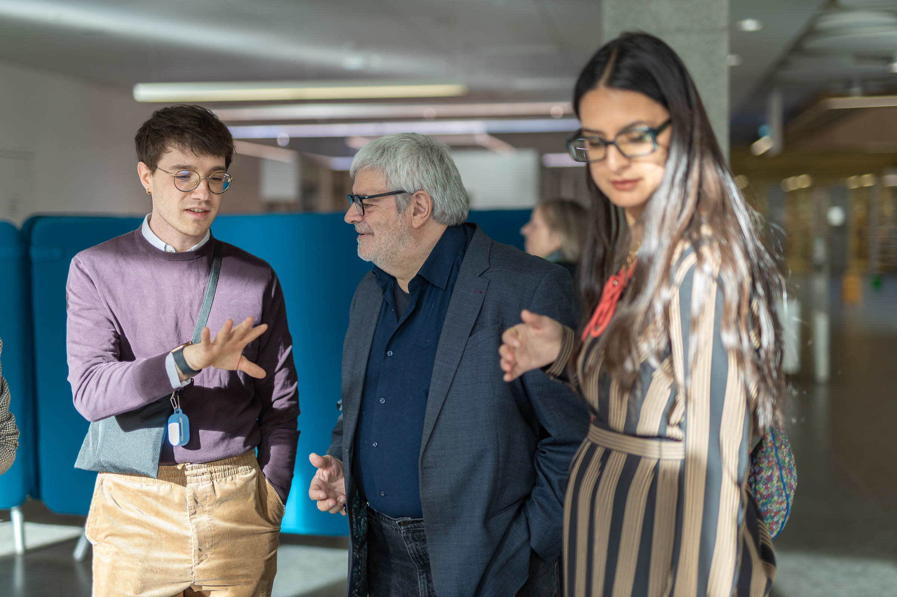
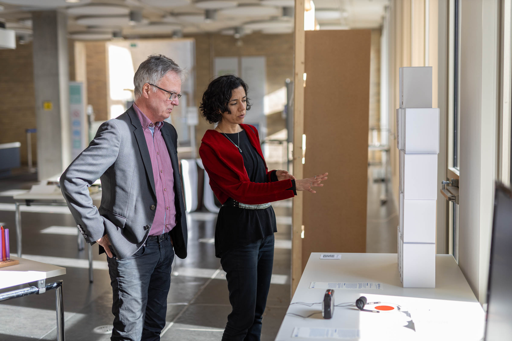
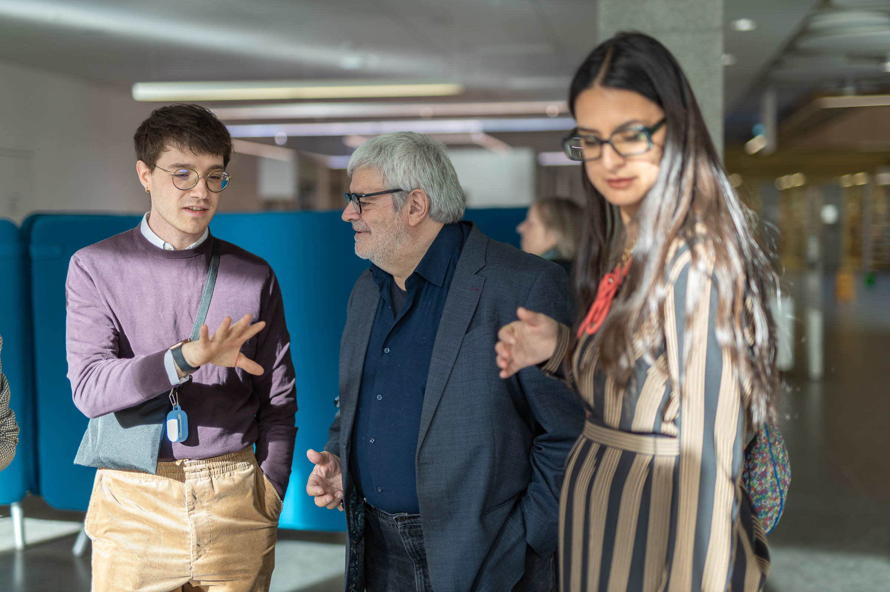
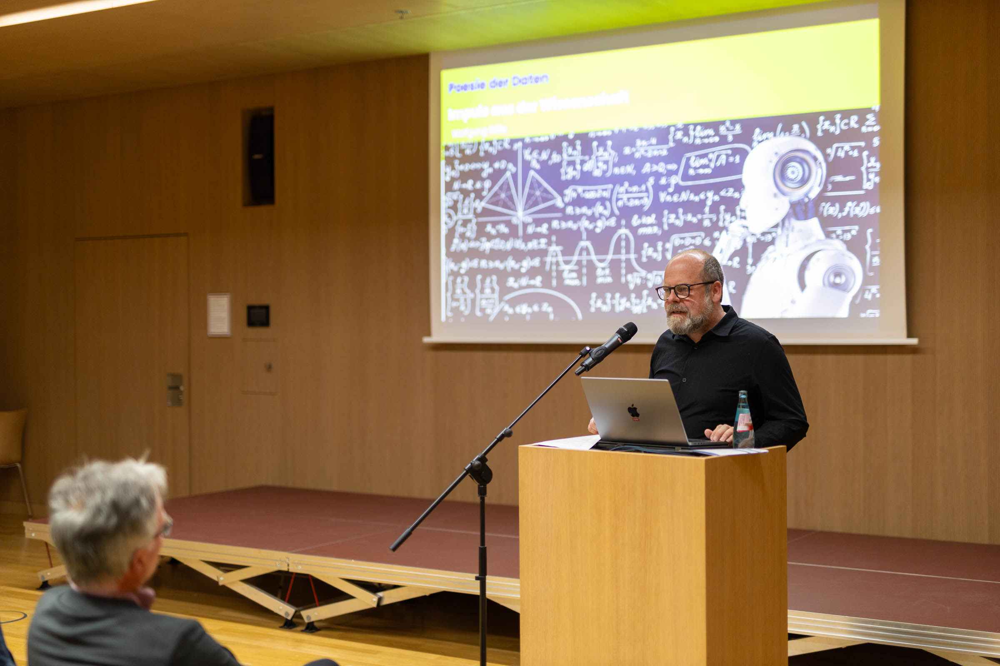
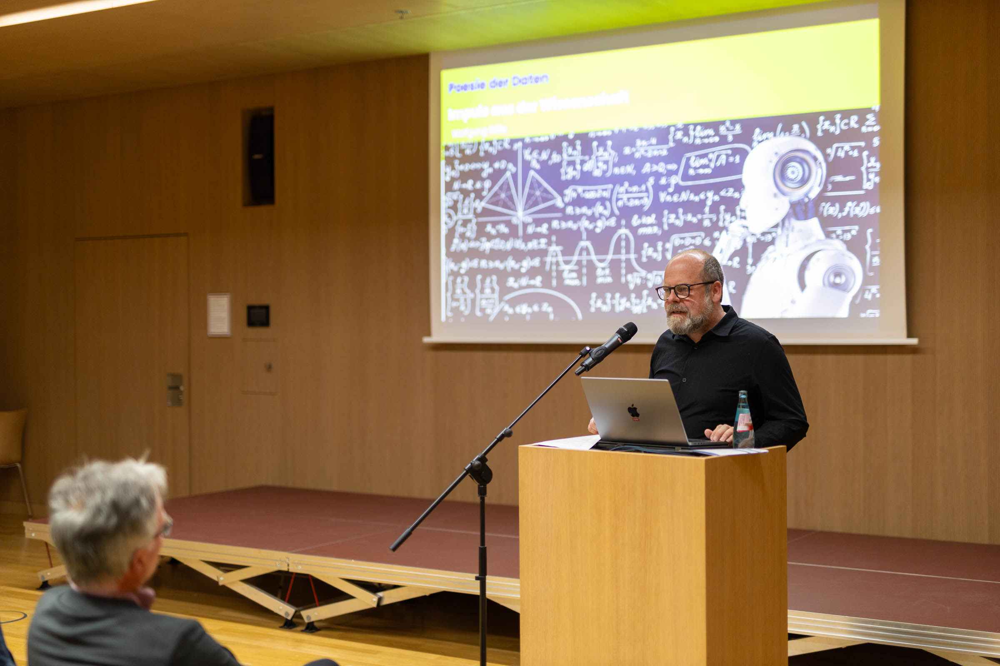

Speech by Salvatore Zingale. 12 aprile 2024, Darmstadt
The re-appropriation of data. A critique of the digital society
Between communication design and art Bruno Munari, one of our most important designers and artists, said: 'The greatest obstacle to understanding a work of art is to want to understand it'. The exhibition we are presenting lies on the borderline between communication design and art. Communication design has the task of making something understandable. But not art. My task now is to make people understand the motivations behind the idea of infopoetry. The easiest way to put it is that it is a teaching and research activity. In fact, the infopoetry was conceived as part of the course on data visualisation. And I should also make it clear why the works exhibited here refer to algorithms; and why it is an operation that we have called 'data re-appropriation'.
Infopoetry
It's a neologism: from info-graphic to info-poetry.
Why?
Because in this case it is no longer a matter of representing data in visual form, but of transforming it into a poetic or artistic form. What is of interest in infopoetry is the transition - more precisely, the translation - from a set of data (from the dataset) to a communicative artefact (to infopoetry) through the mediation of a strong image, such as a metaphor. For this purpose, students can use the medium they consider most appropriate: posters, videos, objects, books, installations, websites. Even painting and sculpture. Even carpets and clothes. Of course, there are certain methodological steps we require of the students. These include, for example, the choice of metaphor, the translation process, the identification of the relevant elements within the dataset that they feel should be communicated. And, above all, the explication of one's own point of view: in infopoetry, the subjectivity of the authors must be clearly visible. We always say: infographics make us see the data, infopoetry makes us feel the data. The purpose of infopoetry is therefore twofold.
1) On the one hand, infopoetry requires students to start from their own interpretations of the data: from their own communicative intentions and subjectivity.
2) On the other hand, infopoetry has the task of touching the readers' sensitivity and thus bringing them closer to what the data represent.
In the eleven years that we have been experimenting with infopoetry, the results have always been surprising. It is as if the students, most of whom have a technical background, seize in infopoetry the opportunity to finally express themselves freely and creatively. Proving that art is always a liberation.
Algorithmic You For the past two years, we have provided students with a specific theme: we asked them to select a set of data from their experiences on the Internet or from digital devices, from smartphones to other media or sensors. For example, some students took them from medical devices.
This led to a new aspect of infopoetry: an act of re-appropriation of the data that each of us leaves behind in the digital sphere.
In the digital age, data is an issue that needs to be thought through.
Data are traces that we leave behind us, often without realising it. Like physical traces, they are part of our experience, our lived experience. They are the signs of what we do. They are the signs of our words, our thoughts, our desires, our social relationships.
They are traces that we overlook, but which are picked up by others; traces that others use to their own advantage.
The students interpreted this proposal in different ways. Each one chose an aspect of their digital life. Aspects that have to do with their own weaknesses or pathologies (physical or mental) or with their own intimacy.
In their work, there is also a lot of self-criticism, playfulness, irony - but also reflection - on the abuse of social networks and the 'parallel life' that takes place in the digital world.
In this sense, Algorithmic You is also an act of criticism of the power of algorithms: yes, an act of re-appropriation. It is an exercise in poetic transformation: what was just a number becomes poetry. What is taken away from us for commercial purposes or social control becomes a critical practice. It becomes the material for a poetic and liberating exercise.

 





 
